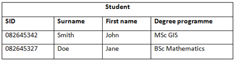
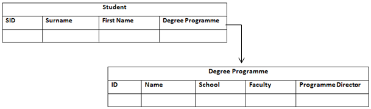

The third component in our web-service solution stack is the Database Management System (DBMS). In this course we will make use of the well-known DBMS PostgreSQL (known as Postgres for short). Postgres is an open-source, platform independent DBMS which is also highly scalable, so suitable for a range or workloads from large internet facing applications to single machine applications. Unlike other well-known DBMS’s such as MySQL (used in the original LAMP stack) or Microsoft SQL Server, Postgres can also be extended for the use of geographic data types by using a spatial database extender known as PostGIS. PostGIS supports geospatial data types such as points, lines and polygons.
A Database Management System (DBMS) is a piece of software that sits in front of the database and allows a user to interact with the data itself. The terms DBMS and Database are often used interchangeably, but in reality the DBMS is the Graphical User Interface (GUI) and the Database is the data holding software itself.
A relational database is an organised collection of related data made up of a number of strictly defined tables (relations). Each table has a number of tuples (rows) and attributes (columns) which represent a real world object. Each row has a unique ID of some kind (S[tudent]ID in the table below).
Relational databases are particularly efficient at storing not only data, but also the relationships between data. For example we may not only need to know the details of a student attending the University of Leeds, but we may also want to know specific details of the degree programme they are studying. It would be considered bad form to include this data in one large table as there would be a large amount of data redundancy, so the data can be split into two tables, joined using a common attribute.
Data redundancy exists whereby the same data is stored in more than one table. A well-designed database would reduce the amount of data redundancy by adhering to database normalisation [http://en.wikipedia.org/wiki/Database_normalization] rules which ensure the data is stored as efficiently as possible.
The modern-day ‘relational database’ was first proposed in 1970 by Edgar Codd, who was then working as a researcher at IBM. Codd departed from the traditional ‘navigational database’ model whereby records or objects were retrieved by following references from other objects. These traditional databases were navigated using a set of pointers or paths between the data records and focussed on how to navigate the data rather than what data to fetch. Codd’s relational model was based upon a branch of mathematics called set theory and predicate logic with the basic idea that unordered tables can be manipulated using non-procedural operations. The history, development and design of relational databases is a vast subject which we don’t have time to cover in any great detail here, but if you are interested; Stanford University teach an entire module on the topic;‘Introduction to Databases’, the materials for which can be found here.
Postgres does not have a GUI, however a piece of software called pgAdmin has been developed to interface with the Postgres database (alternatively you can use the PGSQL command line if you prefer). pgAdmin is an open-source, cross-platform administration and development platform for the PostgreSQL database. pgAdmin allows the user to quickly view and filter data through its GUI and query data with the syntax highlighting SQL editor.
SQL (pronounced “S.Q.L.” or “sequel”) is a special purpose query language used to manage data held in a relational database, such as PostgreSQL. SQL provides functionality such as; select, update, insert and delete. SQL was also developed at IBM in the early 1970’s by Donald Chamberlain and Raymond Boyce, following the emergence of Codd’s relational database model. The language was originally known as SEQUEL and was designed to retrieve and manipulate data stored in one of IBM’s large databases – System R. SQL is now an industry standard (ISO/IEC 9075) and is compatible with all major DBMS’s.
The most common SQL function is the query and you should be familiar with this syntax from ArcMap’s Select by Attributes function. The following statement returns all rows from the Student table defined earlier.
SELECT *
FROM Student
The result can be filtered further by using the WHERE clause:
SELECT *
FROM Student
WHERE Degree Programme = ‘MSc GIS’
For the full SQL reference guide visit w3schools. In task 2 you will be introduced to pgAdmin and the SQL query language.
Task 2